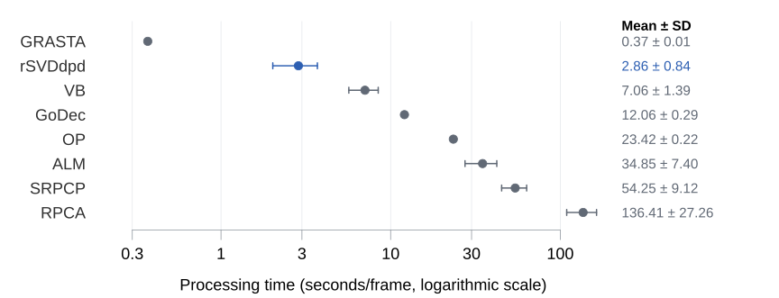
In collaboration with Abhik Ghosh and Ayanendranath Basu
Washington University in St. Louis
November 20, 2026
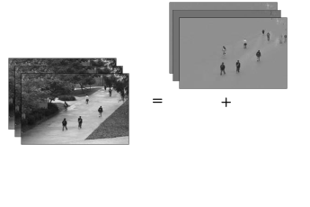
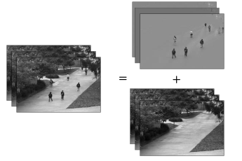
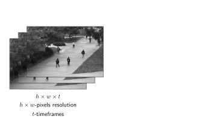
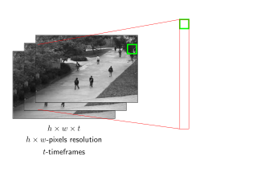
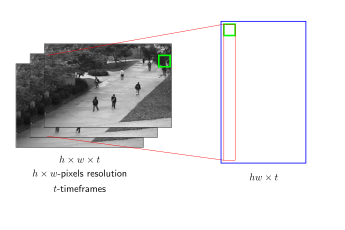
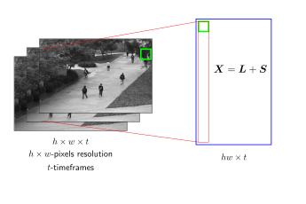
A retail store uses user surveillance footage to analyze foot traffic patterns:
Optimize store layout and product.
Manage staff allocation.
Enhance security and loss prevention.
Surveillance in airports, railways, traffic intersections, ATMs for crowd monitoring.
Improve operational efficiency of traffic hubs.
Ensure public safety through incident detection.
Video filters (Zoom, Google meet).
Motion detectors.
Real-life surveillance has many nuisances.
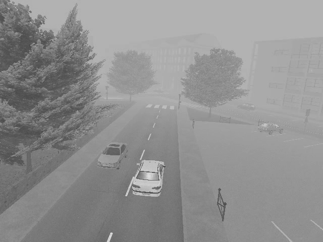
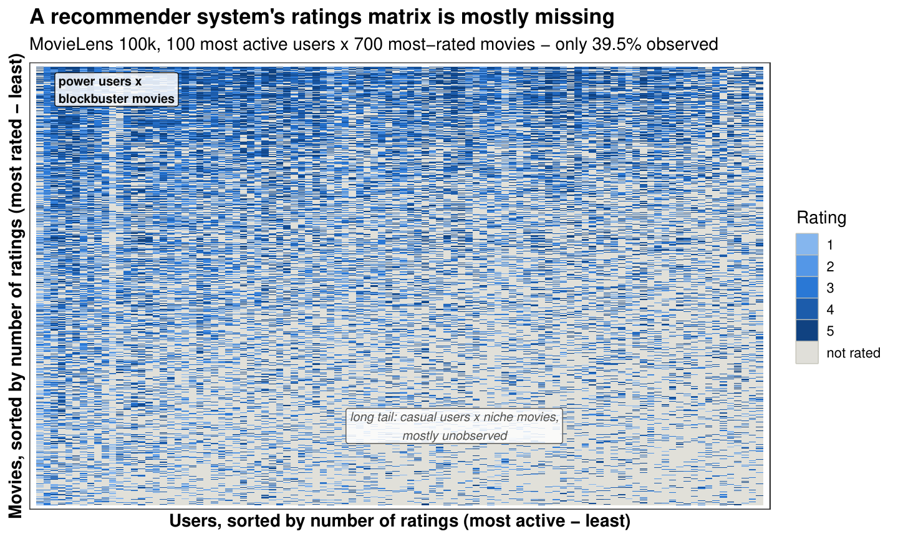
The objective is then to robustly estimate the latent factors (including the number of factors) and complete this matrix.
Recommendation systems are widely used in e-commerce platforms to recommend products to users.
Collected data includes (user, item) pairs and corresponding ratings.
Underlying factors reveal the preferences of users and the characteristics of items.
For a \(n \times p\) matrix \(\boldsymbol{M}\), its singular value decomposition is defined by the factorization
\[ \boldsymbol{M} = \boldsymbol{U}_{n \times r} \boldsymbol{D}_{r \times r} (\boldsymbol{V}_{p \times r})^\top \]
where,
\(\boldsymbol{U}, \boldsymbol{V}\) are unitary matrices (left and right singular vectors).
\(\boldsymbol{D}\) is a diagonal matrix comprising singular values, in decreasing order of magnitude.
\(r\) is the rank of the matrix
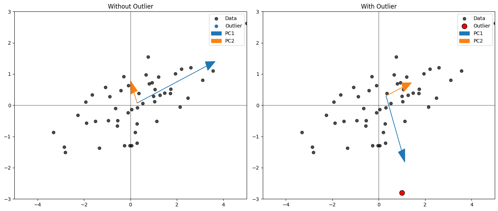
Data generated from multivariate normal. A single outlier can greatly distort the principal component eigenvalues and eigenvectors.
\[ \boldsymbol{X} = \boldsymbol{L} + \boldsymbol{S} + \boldsymbol{N}; \ \boldsymbol{L} \text{ low-rank}, \boldsymbol{S} \text{ sparse and } \boldsymbol{N} \text{ dense noise} \]
\[ \Rightarrow \quad \boldsymbol{X} = \boldsymbol{L} + \boldsymbol{E}, \text{ where, } \boldsymbol{E} = ((\epsilon_{ij}))_{i,j}; \ \epsilon_{ij} \sim (1-\delta) g + \delta h \]
\[ \Rightarrow \quad X_{ij} = \sum_{k=1}^{r} \lambda_k u_{ki} v_{kj} + \epsilon_{ij}, \ \lambda_k = \text{ singular value, } u_{ki}, v_{kj} \text{ are singular vec. } \]
\[ \Rightarrow \quad X_{ij} = \sum_{k=1}^{r} a_{ki} b_{kj} + \epsilon_{ij}; \ \text{assume, } a_{ki} = \sqrt{\lambda_k} u_{ki}, b_{kj} = \sqrt{\lambda_k} v_{kj} \]
Fixing \(j\) yields,
\[ \begin{bmatrix} X_{1j}\\ X_{2j}\\ \vdots\\ X_{nj} \end{bmatrix} = \begin{bmatrix} a_{11} & \dots & a_{r1}\\ \vdots & \ddots & \vdots\\ a_{1n} & \dots & a_{rn} \end{bmatrix}_{n \times r} \begin{bmatrix} b_{1j}\\ b_{2j}\\ \vdots\\ b_{rj} \end{bmatrix} + \begin{bmatrix} \epsilon_{1j}\\ \epsilon_{2j}\\ \vdots \\ \epsilon_{nj} \end{bmatrix} \]
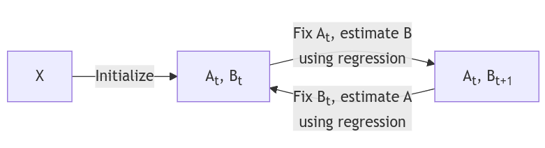
Assume that rank \(r\) is known.
Initialize \(\boldsymbol{A}_0 = \boldsymbol{A}\) and \(\boldsymbol{B}_0 = \boldsymbol{B}\) using classical SVD (or random orthogonal matrices, scaled by the singular values).
Given \(A_{t}\), estimate \(B_{t+1}\) by solving \(p\) multiple linear regression problems.
Given \(B_{t+1}\), estimate \(A_{t+1}\) by solving \(n\) multiple linear regression problems.
Repeat until convergence.
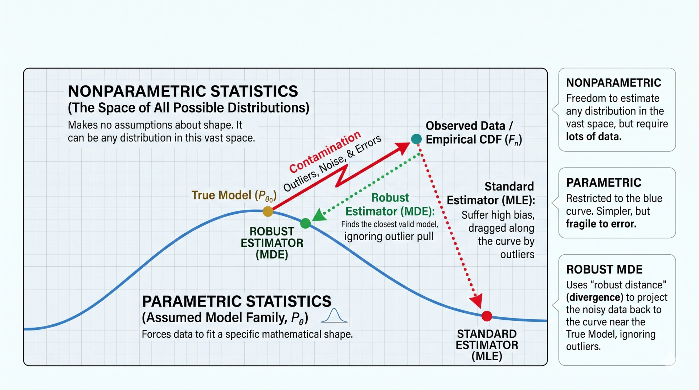
Density Power Divergence (DPD): Given two density functions \(f\) and \(g\), Basu et al. (1998) defines the DPD between them as
\[ d_\alpha(g, f) = \begin{cases} \displaystyle\int f^{1+\alpha} - \left(1+ \dfrac{1}{\alpha} \right)\displaystyle\int f^\alpha g + \dfrac{1}{\alpha} \displaystyle\int g^{1+\alpha}, & \alpha > 0\\ \displaystyle\int f \log(f / g) & \alpha = 0 \end{cases} \]
Given an independent but non-identically distributed sample of observations \(X_1, \dots X_n\) modelled by non-homogeneous families of densities \(\{ f_{i,\theta}: \theta \in \Theta \}\), the MDPDE (Ghosh and Basu) is defined as
\[ \widehat{\theta}_\alpha = \arg\,\min_{\theta \in \Theta} \dfrac{1}{n}\sum_{i=1}^n \left[ \int f_{i, \theta}^{1+\alpha} - \left( 1 + \dfrac{1}{\alpha} \right) f_{i,\theta}^\alpha(X_i) \right] \]
For background modelling problem, usually \(r = 1\), so we have
\[ X_{ij} = a_i b_j + \epsilon_{ij}, \ \epsilon_{ij} \sim f(\cdot / \sigma), \sigma \in (0, \infty) \]
Assume form of \(f\) is known and it is symmetric around \(0\).
\[ w_{ij}^{(t)} = \psi\left( \vert X_{ij} - a_i^{(t)}b_{j}^{(t)} \vert / \sigma^{(t)} \right), \ \psi(x) = -f^{\alpha-1}(\vert x\vert)f'(\vert x\vert) / \vert x\vert \]
\[ a_i^{(t+1/2)} = \left[ \sum_j \textcolor{brown}{(b_j^{(t)})^2 w_{ij}^{(t)}} \right]^{-1} \left[ \sum_j \textcolor{blue}{\dfrac{X_{ij} }{b_j^{(t)}}} \textcolor{brown}{(b_j^{(t)})^2 w_{ij}^{(t)}} \right], \ i = 1, \ldots n; \]
Step 4: Now fixing \(\boldsymbol{a}^{(t+1/2)}\), update \(b_i\) as
\[ b_j^{(t+1)} = \left[ \sum_i \textcolor{brown}{(a_i^{(t+1)})^2 w_{ij}^{(t)}} \right]^{-1} \left[ \sum_i \textcolor{blue}{\dfrac{X_{ij}}{a_i^{(t+1)}}} \textcolor{brown}{(a_i^{(t+1)})^2 w_{ij}^{(t)} } \right], \ j = 1, \ldots p; \]
Step 5: Normalize \(\boldsymbol{b}^{(t+1)}\).
Step 6: Update noise variance
\[ (\sigma^{(t+1)})^2 = \sum_{i,j} \textcolor{blue}{(x_{ij} - a_i^{(t+1)} b_j^{(t+1)})^2} \frac{w_{ij}^{(t)}}{np} / \left(\sum_{i,j} \frac{w_{ij}^{(t)}}{np} - \frac{\alpha}{(1 + \alpha)}\int f^{1+\alpha} \right) \]
Step 7: Repeat until convergence.
| Density family | \(\propto f(x)\) | \(\psi(x)\) |
|---|---|---|
| Normal | \(e^{-x^2/2}\) | \(e^{-\alpha x^2/2}\) |
| Laplace | \(e^{-\vert x\vert}\) | \(e^{-\alpha\vert x\vert}/\vert x\vert\) |
| \(t_\nu\) | \((1+x^2/\nu)^{-(1+\nu)/2}\) | \((1 + 1/\nu)(1 + x^2/\nu)^{-\alpha(\nu + 1)/2 - 1}\) |
| Logistic | \(e^{-x}/(1+e^{-x})^2\) | \(e^{-\alpha x}(1 - e^{-x})/x(1+e^{-x})^{2\alpha + 1}\) |
Most of the cases, the \(\psi(\cdot)\) is decreasing
\(\text{More errors} \implies \text{Less weight} \implies \text{More stable estimate}\)
Assume that,
\(f\) is twice differentiable.
\(f'(x) \leq 0\) for all \(x > 0\) and \(\frac{1}{x} > \alpha \frac{f'(x)}{f(x)} + s'(x)\frac{f(x)}{f'(x)}\), where \(s(x)\) is the score function. Equivalently, \(\psi'(x) < 0\) for \(x > 0\).
\(x^2 \psi(x) = O(1)\) for all \(x \geq 0\).
Under these assumptions,
Theorem 1 (Roy, Basu and Ghosh, 2024) The algorithm converges to a global optimum of the restricted DPD objective function.
Theorem 2 (Roy, Basu and Ghosh, 2024) The converged rPCAdpd estimator has orthogonal equivariance properties.
Can we always recover \(\boldsymbol{L}\) and \(\boldsymbol{S}\) from \(\boldsymbol{X}\)?
NO!
\[ \boldsymbol{X} = \begin{bmatrix} 0 & 0 & 0\\ 0 & 0 & 0\\ 1 & 0 & 0\\ 0 & 0 & 0 \end{bmatrix} = \boldsymbol{L}_1 + \boldsymbol{S}_1 = \boldsymbol{L}_2 + \boldsymbol{S}_2 \]
where
\[ \boldsymbol{L}_1 = \boldsymbol{S}_2 = \boldsymbol{e}_3\boldsymbol{e}_1^\top, \ \boldsymbol{L}_2 = \boldsymbol{S}_1 = \boldsymbol{0} \]
Solution: Assume
\[ \begin{aligned} \{ u_1(\boldsymbol{X}), \dots, u_r(\boldsymbol{X}) \} \cap \{ \boldsymbol{e}_1, \dots, \boldsymbol{e}_n \} & = \phi\\ \{ v_1(\boldsymbol{X}), \dots, v_r(\boldsymbol{X}) \} \cap \{ \boldsymbol{e}'_1, \dots, \boldsymbol{e}'_p \} & = \phi \end{aligned} \]
As a result, stereographic projection is possible!
Typical consistency and asymptotic normality for i.i.d. sample \(X_1, \dots, X_n \in \mathbb{R}^p\) with one caveat.
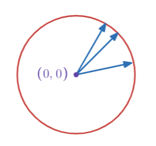
\(\implies\)
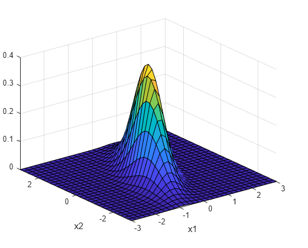
Theorem: (Roy, Basu and Ghosh, 2024) For fixed \(p\), as \(n \rightarrow \infty\), the rSVDdpd estimates \(\hat{\lambda}\) and \(\hat{\boldsymbol{v}}_1\) and \(\hat{\boldsymbol{\eta}} = \text{Stereo}^+(\hat{\boldsymbol{v}}_1)\) satisfies
\[ \hat{\lambda} \xrightarrow{P} \lambda, \Vert \hat{\boldsymbol{v}}_1 - \boldsymbol{v}_1 \Vert_2 \xrightarrow{P} 0, \qquad \sqrt{n} \begin{pmatrix} \hat{\lambda} - \lambda\\ \hat{\boldsymbol{\eta}} - \boldsymbol{\eta} \end{pmatrix} \xrightarrow{d} N(\boldsymbol{0}, \boldsymbol{V}) \]
In many situations, you will have \(n, p \to \infty\) but \(n/p \to \text{constant}\).
Imagine spatiotemporal data, \(n\) is the number of timepoints, \(p\) is the number of locations.
Connectivity matrix in network graph, \(n = p \to \infty\), but \(n / p = 1\).
Theorem (Roy, Ghosh and Basu, 2024) Under some regularity assumptions and when error variance \(\sigma^2 \sim (np)^{-1/2}\), then as both \(n \rightarrow \infty, p \rightarrow \infty\), but \(n/p \rightarrow c \in (0, \infty)\), the rSVDdpd estimator converges to the true SVD estimates (i.e., the true minimum of DPD between \(g\) and \(f(\cdot / \sigma)\)).

rSVDdpd is the second fastest method in this reported benchmark.
Points: reported means. Error bars: ±1 standard deviation (not confidence intervals). Lower is faster. Source: Roy, Basu and Ghosh, Table 1, arXiv:2109.10680.
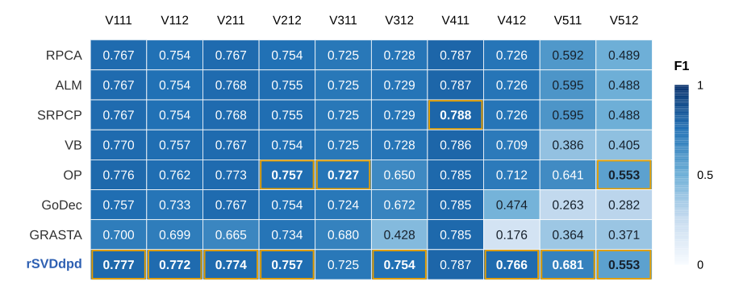
rSVDdpd has the highest reported F1 in 8 of 10 columns, including 2 ties.
Higher is better. Orange borders and bold values mark column maxima, including ties at the reported precision. In \(V_{i1j}\), \(i\) identifies the variant and \(j=1,2\) denotes training/testing. Source: Roy, Basu and Ghosh, Table 2, arXiv:2109.10680.
20% contamination, with dimension \(p=10,25,50,100,250\).
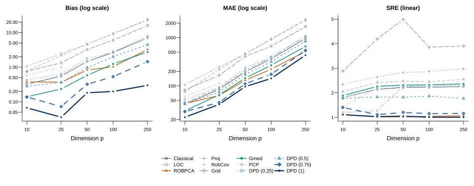
DPD (\(\alpha=1\)) has the lowest reported Bias and MAE at every dimension.
Lower is better for all metrics. Bias/MAE use log scales; SRE uses a linear scale. All panels use a log-scaled \(p\) axis. RobCov has no reported results for \(p\geq50\). Source: Roy, Basu and Ghosh (2024), JMLR, Table 3 (S2b).
Dataset: University of Houston Camera Tampering Dataset.
Truth
OP
ADMM
GoDec
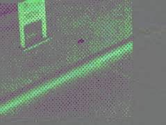
rSVDdpd
Rows: frames 5, 50, and 75. The last four columns show estimated foreground.
MovieLens 100k, restricted to \(50\) active users \(\times\) \(120\) popular movies (\(75\%\) observed).
Rows/columns sorted by their loading on the first robust factor – the same sort reveals a smooth gradient in both panels.
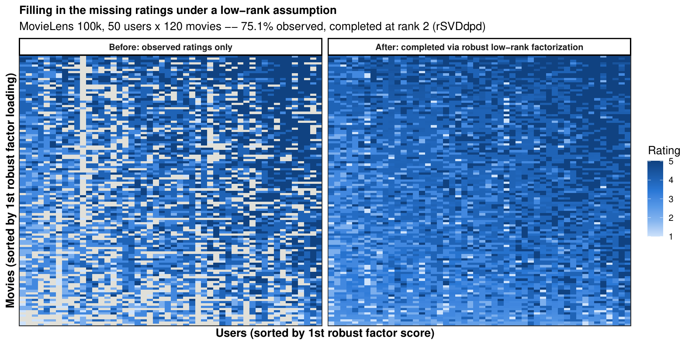
A numerically low rank is useful if recovered factors correspond to something real. Look at the movies loading most heavily on each robust singular vector.
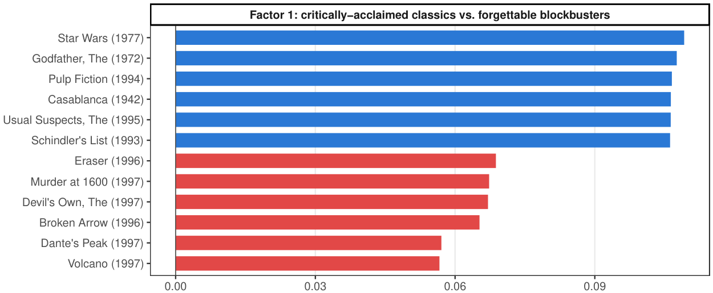
Separates critically acclaimed classics (Godfather, Pulp Fiction, Casablanca) from mid-90s blockbusters (Volcano, Dante’s Peak).
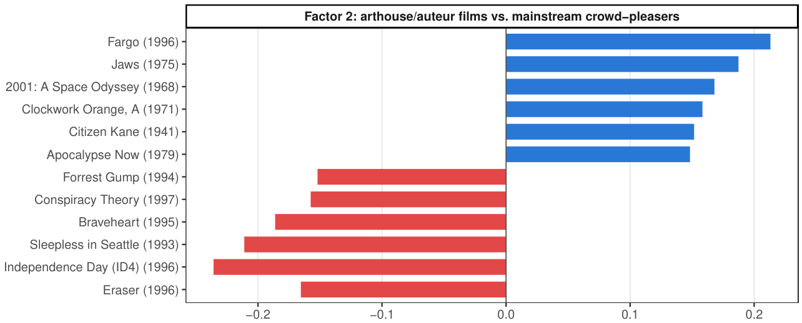
Separates arthouse/auteur films (Fargo, 2001: A Space Odyssey, Citizen Kane) from mainstream crowd-pleasers (Independence Day, Forrest Gump).
Robust low-rank estimation: alternating regression with DPD downweights large residuals when estimating the latent structure.
Applications: background/foreground separation in video and latent-factor recovery in recommender systems.
Theory: convergence, equivariance and consistency results hold under the stated assumptions.
Computation: The iterative robust SVD algorithm is extremely fast, parallelizable, and is simply a weighted regression computation.
rsvddpd on CRAN implements the rSVDdpd() estimator.
Roy, Ghosh and Basu (2024). Robust singular value decomposition with application to video surveillance background modelling. Statistics and Computing, 34, 178.
Roy, Basu and Ghosh (2024). Robust Principal Component Analysis using Density Power Divergence. Journal of Machine Learning Research, 25(324), 1–40.
Questions?